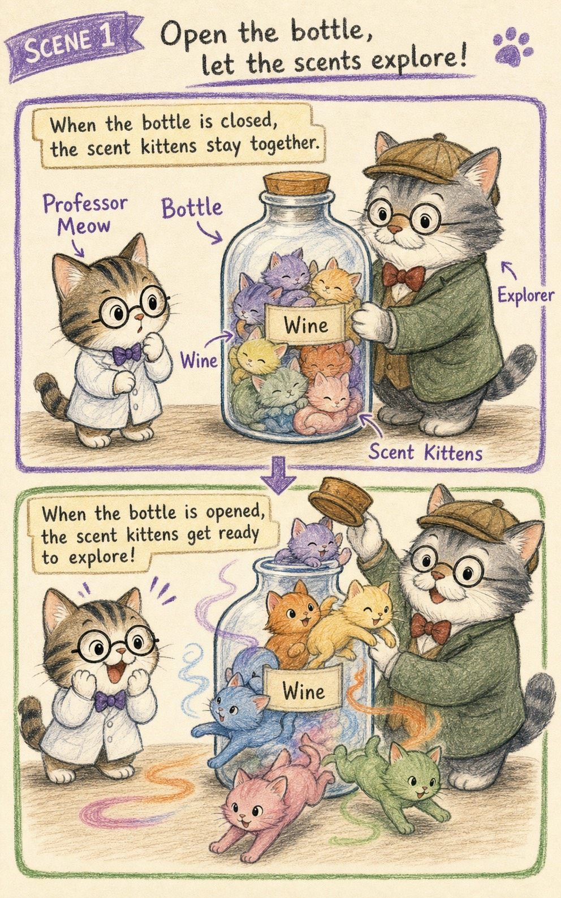
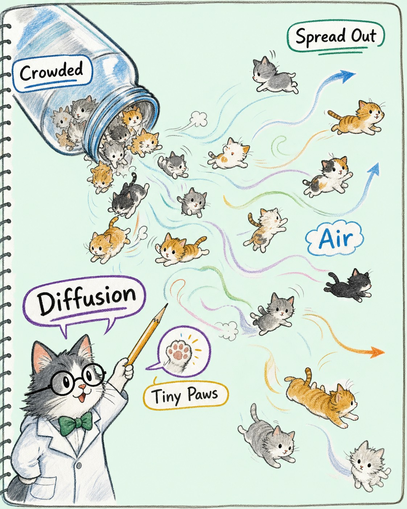
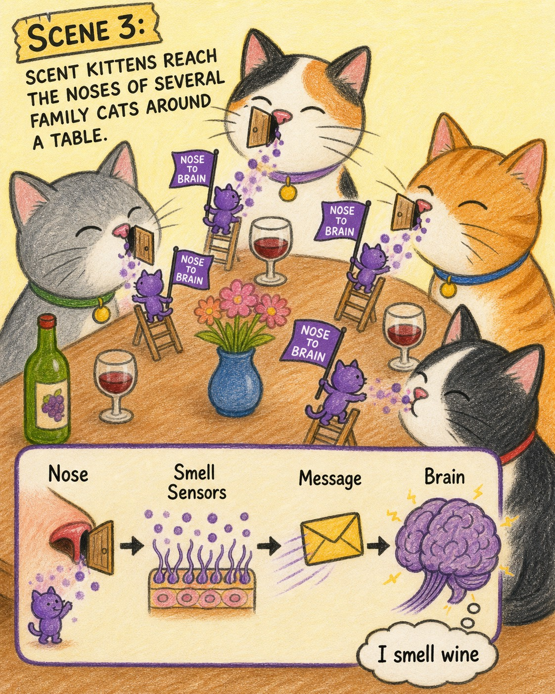
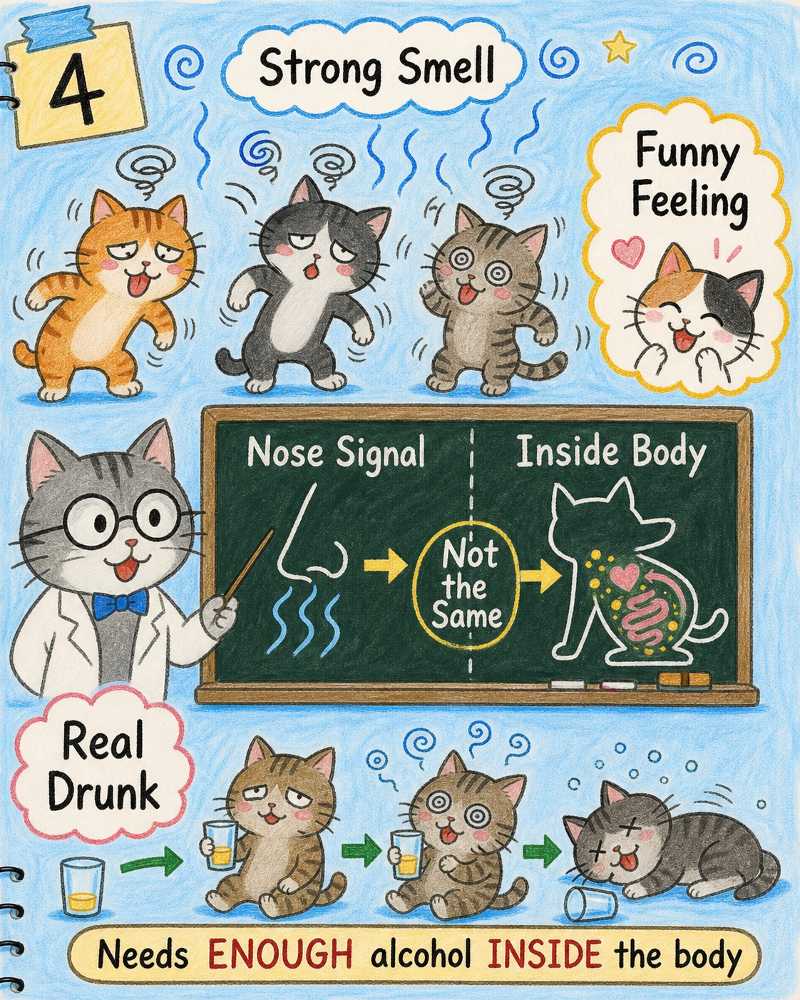
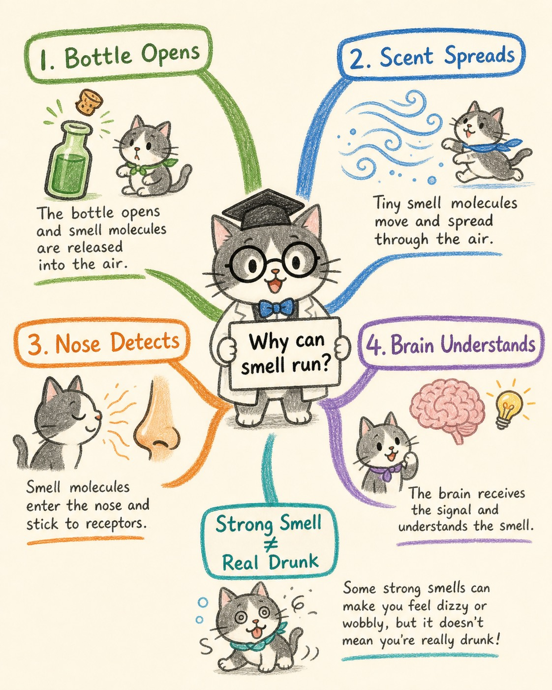

Professor Meow Notebook
味道为什么会自己跑出来？
从“爷爷带着酒，味道散出来，大家都醉了”这幅画出发，喵博士和探险家一起追踪一群会跑的小味道。
给兔兔的问题
如果酒瓶没有脚，酒味为什么能从爷爷那里跑到大家的鼻子里？
第一步：核心翻译
在我们的世界里，那其实是一群“味道小猫”从酒里醒来，开始在空气里到处散步。
酒不是只待在瓶子里的安静东西。只要有一点点开口，里面很轻很轻的味道小猫就会探出头。它们太小了，小到眼睛看不见；可是鼻子很厉害，能发现它们留下的爪印。
这些味道小猫有一个习惯：哪里挤，它们就往哪里不挤的地方跑。所以爷爷一靠近，酒味就不是站在原地等人闻，而是在空气里慢慢铺开。
场景一：瓶子里的小味道醒了

爷爷带来的酒瓶像一个小房间。盖子没有完全关住时，里面的味道小猫就闻到了外面的空气，开始探头探脑。味道能出来，是因为酒里有很小很轻的味道颗粒，它们会离开液体，跑进空气。
场景二：味道小猫向四周散开

刚跑出来时，瓶口附近的味道小猫最多，挤得尾巴都要打结。于是它们往空一点的地方跑，一只跑到桌边，一只跑到门口，一只跑到兔兔旁边。这就是“散开”：从多的地方跑向少的地方。
场景三：鼻子收到消息

当味道小猫碰到鼻子里的小门铃，门铃就会叮一下，把消息送给大脑。于是大脑说：“啊，我闻到了酒味！” 我们闻到的不是整瓶酒，而是酒里跑出来的小味道到达了鼻子。
场景四：大家为什么像醉了

如果味道小猫特别多，鼻子和大脑会收到很强的消息，人就可能觉得“哇，好冲”“有点晕”“像醉了一样”。不过喵博士要悄悄画一条分界线：闻到很强的酒味，和真的喝进去后醉了，不是同一件事。兔兔画的是那种很棒的感觉真相：酒味一来，空气都晃起来了。
给兔兔的互动小任务
下次可以问他：“你画的蓝色和黑色，哪一种是酒味小猫？哪一种是大家晃起来的感觉？” 然后请他再加一笔：酒味最先从哪里跑出来？最后跑到了谁的鼻子里？
这样他不是被解释，而是在继续当发明者。你得到的下一张画，很可能会告诉你：他心里觉得“味道”到底是风、线、云、怪兽，还是一群会跑的小猫。
最后的喵博士思维图

可以直接发给他的开场白
兔兔，你这张画让我发现一个超级厉害的问题：
酒瓶没有脚，酒味为什么会自己跑出来，还能跑到大家鼻子里？
喵博士说，可能是酒里住着一群很小很小的味道小猫。瓶子一打开，它们就从最挤的地方跑到不挤的地方。你画里的蓝色和黑色，会不会就是它们跑过空气时留下的路？